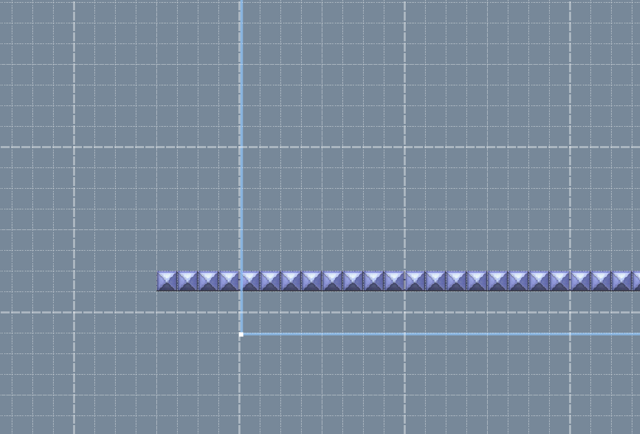

Thanks for posting this! I have some updated information.
The value 28, which is "Switch Palace" is definitely unused, as it's only text saying "Palace" in the code, and Newer uses images for the Switch Palaces. _________________________
I need to make a signature...
It all starts like this. Ganon captured Link. Then Zelda found out that the triforce had 4 pieces. not 3. She went to the triforce and threw the 3rd shard (that is black) at it. the shard went in the middle. Then she punched it for its power and then there was a gigantic explosion. Everyone died but zelda and ganon and link. Ganon and Link started fighting. Athend, Ganon hit link to the ground. Ganon was about to end it when captain falcon came out of somewhere i mean nowhere and used falcon punch. Then he exploded and died. Zelda said "wow Link sucks." Link heard, got pissed, Transformed into Dark Link and exploded. Ganon was so shocked he died out of laughter. zelda almost had the same fate but the triforce which is now black and Purple aura copied Zelda's apperance and then gained 4 heads and a dragon tail. Its name is dragon zelda. zelda acted like she was all and powerful. dragon zelda charged at zelda and she hit the floor. She started crying alot. then toon link and young link came out of nowhere i mean somewhere and went beside zelda. they screamed "AHHHHHH!!!" and exploded. then they reformed to a toon female link with pink hair. fink. fink acted like she was all and powerful. but then dragon zelda charged at fink and she hit the floor. this time she was actually dead. Now everyone was dead but dragon zelda. Now she turns into a shiek with a bigger dragon tail. she teleported to a dimension with everything normal. because she can. then she looked for zelda. she found her, killed her instanly and became the new zelda.
Files "sewer.brres" and "koopa.brres" aren't actually in the lakitu.arc file. This means this is some unused
code. Also, space.brres it the exact same as "yoshi.brres". But anyways, you could add more models in the world
order you want them to be used.
If you scroll past the halfway point, there will be a section showing the IDs of what show up in the shop.
For example, in Yoshi's Island, it's shop has:
-A Mushroom for 1 Star Coin
-A Fire Flower for 2 Star Coins
-An Ice Flower for 2 Star Coins
-A Propeller for 3 Star Coins
-2 Fire Flowers & 1 Ice Flower for 5 Star Coins
-2 Mushrooms, A 1-Up, & 2 Propellers for 8 Star Coins.
This is how it functions. I'll start with the first line.
The first item (commonly Mushrooms) is 1 Star Coin.
The next 2 on the list (often Fire & Ice Flowers) are 2 Star Coins.
The 4th item (Usually either Propeller, Penguin, or Hammer Suit) is 3 Star Coins.
The 2nd line has the 3 items you can get for 5 Star Coins.
The 3rd and final line has the 5 items you can get for 8 Star Coins. _________________________
I need to make a signature...
It all starts like this. Ganon captured Link. Then Zelda found out that the triforce had 4 pieces. not 3. She went to the triforce and threw the 3rd shard (that is black) at it. the shard went in the middle. Then she punched it for its power and then there was a gigantic explosion. Everyone died but zelda and ganon and link. Ganon and Link started fighting. Athend, Ganon hit link to the ground. Ganon was about to end it when captain falcon came out of somewhere i mean nowhere and used falcon punch. Then he exploded and died. Zelda said "wow Link sucks." Link heard, got pissed, Transformed into Dark Link and exploded. Ganon was so shocked he died out of laughter. zelda almost had the same fate but the triforce which is now black and Purple aura copied Zelda's apperance and then gained 4 heads and a dragon tail. Its name is dragon zelda. zelda acted like she was all and powerful. dragon zelda charged at zelda and she hit the floor. She started crying alot. then toon link and young link came out of nowhere i mean somewhere and went beside zelda. they screamed "AHHHHHH!!!" and exploded. then they reformed to a toon female link with pink hair. fink. fink acted like she was all and powerful. but then dragon zelda charged at fink and she hit the floor. this time she was actually dead. Now everyone was dead but dragon zelda. Now she turns into a shiek with a bigger dragon tail. she teleported to a dimension with everything normal. because she can. then she looked for zelda. she found her, killed her instanly and became the new zelda.
Please don't delete... basically anything in the New Super Mario Bros Wii section, if you were to restart.
I'm looking forward to your NSMBW mod. _________________________
I need to make a signature...
It all starts like this. Ganon captured Link. Then Zelda found out that the triforce had 4 pieces. not 3. She went to the triforce and threw the 3rd shard (that is black) at it. the shard went in the middle. Then she punched it for its power and then there was a gigantic explosion. Everyone died but zelda and ganon and link. Ganon and Link started fighting. Athend, Ganon hit link to the ground. Ganon was about to end it when captain falcon came out of somewhere i mean nowhere and used falcon punch. Then he exploded and died. Zelda said "wow Link sucks." Link heard, got pissed, Transformed into Dark Link and exploded. Ganon was so shocked he died out of laughter. zelda almost had the same fate but the triforce which is now black and Purple aura copied Zelda's apperance and then gained 4 heads and a dragon tail. Its name is dragon zelda. zelda acted like she was all and powerful. dragon zelda charged at zelda and she hit the floor. She started crying alot. then toon link and young link came out of nowhere i mean somewhere and went beside zelda. they screamed "AHHHHHH!!!" and exploded. then they reformed to a toon female link with pink hair. fink. fink acted like she was all and powerful. but then dragon zelda charged at fink and she hit the floor. this time she was actually dead. Now everyone was dead but dragon zelda. Now she turns into a shiek with a bigger dragon tail. she teleported to a dimension with everything normal. because she can. then she looked for zelda. she found her, killed her instanly and became the new zelda.
Thanks for posting this! By the way, what are the differences in version 1.2.0? _________________________
I need to make a signature...
It all starts like this. Ganon captured Link. Then Zelda found out that the triforce had 4 pieces. not 3. She went to the triforce and threw the 3rd shard (that is black) at it. the shard went in the middle. Then she punched it for its power and then there was a gigantic explosion. Everyone died but zelda and ganon and link. Ganon and Link started fighting. Athend, Ganon hit link to the ground. Ganon was about to end it when captain falcon came out of somewhere i mean nowhere and used falcon punch. Then he exploded and died. Zelda said "wow Link sucks." Link heard, got pissed, Transformed into Dark Link and exploded. Ganon was so shocked he died out of laughter. zelda almost had the same fate but the triforce which is now black and Purple aura copied Zelda's apperance and then gained 4 heads and a dragon tail. Its name is dragon zelda. zelda acted like she was all and powerful. dragon zelda charged at zelda and she hit the floor. She started crying alot. then toon link and young link came out of nowhere i mean somewhere and went beside zelda. they screamed "AHHHHHH!!!" and exploded. then they reformed to a toon female link with pink hair. fink. fink acted like she was all and powerful. but then dragon zelda charged at fink and she hit the floor. this time she was actually dead. Now everyone was dead but dragon zelda. Now she turns into a shiek with a bigger dragon tail. she teleported to a dimension with everything normal. because she can. then she looked for zelda. she found her, killed her instanly and became the new zelda.
Thanks for posting the Windows build. By the way, you may want to erase this line, since the file is now uploaded.
I have a Windows version compiled by MrRean but i can't upload it due to being grounded
_________________________
I need to make a signature...
It all starts like this. Ganon captured Link. Then Zelda found out that the triforce had 4 pieces. not 3. She went to the triforce and threw the 3rd shard (that is black) at it. the shard went in the middle. Then she punched it for its power and then there was a gigantic explosion. Everyone died but zelda and ganon and link. Ganon and Link started fighting. Athend, Ganon hit link to the ground. Ganon was about to end it when captain falcon came out of somewhere i mean nowhere and used falcon punch. Then he exploded and died. Zelda said "wow Link sucks." Link heard, got pissed, Transformed into Dark Link and exploded. Ganon was so shocked he died out of laughter. zelda almost had the same fate but the triforce which is now black and Purple aura copied Zelda's apperance and then gained 4 heads and a dragon tail. Its name is dragon zelda. zelda acted like she was all and powerful. dragon zelda charged at zelda and she hit the floor. She started crying alot. then toon link and young link came out of nowhere i mean somewhere and went beside zelda. they screamed "AHHHHHH!!!" and exploded. then they reformed to a toon female link with pink hair. fink. fink acted like she was all and powerful. but then dragon zelda charged at fink and she hit the floor. this time she was actually dead. Now everyone was dead but dragon zelda. Now she turns into a shiek with a bigger dragon tail. she teleported to a dimension with everything normal. because she can. then she looked for zelda. she found her, killed her instanly and became the new zelda.
It all starts like this. Ganon captured Link. Then Zelda found out that the triforce had 4 pieces. not 3. She went to the triforce and threw the 3rd shard (that is black) at it. the shard went in the middle. Then she punched it for its power and then there was a gigantic explosion. Everyone died but zelda and ganon and link. Ganon and Link started fighting. Athend, Ganon hit link to the ground. Ganon was about to end it when captain falcon came out of somewhere i mean nowhere and used falcon punch. Then he exploded and died. Zelda said "wow Link sucks." Link heard, got pissed, Transformed into Dark Link and exploded. Ganon was so shocked he died out of laughter. zelda almost had the same fate but the triforce which is now black and Purple aura copied Zelda's apperance and then gained 4 heads and a dragon tail. Its name is dragon zelda. zelda acted like she was all and powerful. dragon zelda charged at zelda and she hit the floor. She started crying alot. then toon link and young link came out of nowhere i mean somewhere and went beside zelda. they screamed "AHHHHHH!!!" and exploded. then they reformed to a toon female link with pink hair. fink. fink acted like she was all and powerful. but then dragon zelda charged at fink and she hit the floor. this time she was actually dead. Now everyone was dead but dragon zelda. Now she turns into a shiek with a bigger dragon tail. she teleported to a dimension with everything normal. because she can. then she looked for zelda. she found her, killed her instanly and became the new zelda.
In Reggie, there's an option that lets you warp across the edges of the zones in each area.
However, you would have to mimmick the its set up as shown in 01-20 in NSMBW. That course is
the First Coin Battle Level, as pointed out by 9211tr.
It's... really hard and annoying to set up right. So I made an Area template that you can
download and use for your levels! The level only has one area with one zone set up for your
level.
In the zone, there are blocks that show how to properly warp across the edges if you were to
walk in a straight line.

This shows how to set up the warping across the edges. You just need to extend the ground about
4 tiles out of the zone like so.
There are a few things you need to know before using this.
-The Zone is set to "Scroll Bottom to Top". You can change
this to "Scroll Top to Bottom" if you want.
-You can delete the blocks at the bottom. They are just an
example.
-This works for New and Newer SMBW
-The Zone is set to "Y Tracking" only.
...It's best to keep it that way.
-The Zoom level is set to 1.
...It's also best to keep it that way.
-You can change the Y size of the zone. If you do, though,
I suggest you do from changing the Y size # itself.
-The Y Position needs to stay 481.
The X Position needs to stay 256.
Why? Because otherwise, the edge warping will be more like
edge teleportation. Also, some sprites might Glitch out or
act weird.
-Keep in mind that pretty much all sprites warp across the
stage edges as well.
Don't play it! It's really really bad! I was honestly
just testing the template, but then I got bored and
decided to make a level out of it. Oops!
_________________________
I need to make a signature...
It all starts like this. Ganon captured Link. Then Zelda found out that the triforce had 4 pieces. not 3. She went to the triforce and threw the 3rd shard (that is black) at it. the shard went in the middle. Then she punched it for its power and then there was a gigantic explosion. Everyone died but zelda and ganon and link. Ganon and Link started fighting. Athend, Ganon hit link to the ground. Ganon was about to end it when captain falcon came out of somewhere i mean nowhere and used falcon punch. Then he exploded and died. Zelda said "wow Link sucks." Link heard, got pissed, Transformed into Dark Link and exploded. Ganon was so shocked he died out of laughter. zelda almost had the same fate but the triforce which is now black and Purple aura copied Zelda's apperance and then gained 4 heads and a dragon tail. Its name is dragon zelda. zelda acted like she was all and powerful. dragon zelda charged at zelda and she hit the floor. She started crying alot. then toon link and young link came out of nowhere i mean somewhere and went beside zelda. they screamed "AHHHHHH!!!" and exploded. then they reformed to a toon female link with pink hair. fink. fink acted like she was all and powerful. but then dragon zelda charged at fink and she hit the floor. this time she was actually dead. Now everyone was dead but dragon zelda. Now she turns into a shiek with a bigger dragon tail. she teleported to a dimension with everything normal. because she can. then she looked for zelda. she found her, killed her instanly and became the new zelda.
Oh yeah, forgot about that! I'll add that little note to the main post. _________________________
I need to make a signature...
It all starts like this. Ganon captured Link. Then Zelda found out that the triforce had 4 pieces. not 3. She went to the triforce and threw the 3rd shard (that is black) at it. the shard went in the middle. Then she punched it for its power and then there was a gigantic explosion. Everyone died but zelda and ganon and link. Ganon and Link started fighting. Athend, Ganon hit link to the ground. Ganon was about to end it when captain falcon came out of somewhere i mean nowhere and used falcon punch. Then he exploded and died. Zelda said "wow Link sucks." Link heard, got pissed, Transformed into Dark Link and exploded. Ganon was so shocked he died out of laughter. zelda almost had the same fate but the triforce which is now black and Purple aura copied Zelda's apperance and then gained 4 heads and a dragon tail. Its name is dragon zelda. zelda acted like she was all and powerful. dragon zelda charged at zelda and she hit the floor. She started crying alot. then toon link and young link came out of nowhere i mean somewhere and went beside zelda. they screamed "AHHHHHH!!!" and exploded. then they reformed to a toon female link with pink hair. fink. fink acted like she was all and powerful. but then dragon zelda charged at fink and she hit the floor. this time she was actually dead. Now everyone was dead but dragon zelda. Now she turns into a shiek with a bigger dragon tail. she teleported to a dimension with everything normal. because she can. then she looked for zelda. she found her, killed her instanly and became the new zelda.
It all starts like this. Ganon captured Link. Then Zelda found out that the triforce had 4 pieces. not 3. She went to the triforce and threw the 3rd shard (that is black) at it. the shard went in the middle. Then she punched it for its power and then there was a gigantic explosion. Everyone died but zelda and ganon and link. Ganon and Link started fighting. Athend, Ganon hit link to the ground. Ganon was about to end it when captain falcon came out of somewhere i mean nowhere and used falcon punch. Then he exploded and died. Zelda said "wow Link sucks." Link heard, got pissed, Transformed into Dark Link and exploded. Ganon was so shocked he died out of laughter. zelda almost had the same fate but the triforce which is now black and Purple aura copied Zelda's apperance and then gained 4 heads and a dragon tail. Its name is dragon zelda. zelda acted like she was all and powerful. dragon zelda charged at zelda and she hit the floor. She started crying alot. then toon link and young link came out of nowhere i mean somewhere and went beside zelda. they screamed "AHHHHHH!!!" and exploded. then they reformed to a toon female link with pink hair. fink. fink acted like she was all and powerful. but then dragon zelda charged at fink and she hit the floor. this time she was actually dead. Now everyone was dead but dragon zelda. Now she turns into a shiek with a bigger dragon tail. she teleported to a dimension with everything normal. because she can. then she looked for zelda. she found her, killed her instanly and became the new zelda.
Um, does anyone know how to do Event Looping with the Event Looper? I'm trying to make event looping in NewSMBW for something.
Also, does anyone know what I need to do if I want to load NewerSMBW's sprite data but without the custom world maps, the custom titlescreens,
and the custom HUD? I really just want it's sprite data. _________________________
I need to make a signature...
It all starts like this. Ganon captured Link. Then Zelda found out that the triforce had 4 pieces. not 3. She went to the triforce and threw the 3rd shard (that is black) at it. the shard went in the middle. Then she punched it for its power and then there was a gigantic explosion. Everyone died but zelda and ganon and link. Ganon and Link started fighting. Athend, Ganon hit link to the ground. Ganon was about to end it when captain falcon came out of somewhere i mean nowhere and used falcon punch. Then he exploded and died. Zelda said "wow Link sucks." Link heard, got pissed, Transformed into Dark Link and exploded. Ganon was so shocked he died out of laughter. zelda almost had the same fate but the triforce which is now black and Purple aura copied Zelda's apperance and then gained 4 heads and a dragon tail. Its name is dragon zelda. zelda acted like she was all and powerful. dragon zelda charged at zelda and she hit the floor. She started crying alot. then toon link and young link came out of nowhere i mean somewhere and went beside zelda. they screamed "AHHHHHH!!!" and exploded. then they reformed to a toon female link with pink hair. fink. fink acted like she was all and powerful. but then dragon zelda charged at fink and she hit the floor. this time she was actually dead. Now everyone was dead but dragon zelda. Now she turns into a shiek with a bigger dragon tail. she teleported to a dimension with everything normal. because she can. then she looked for zelda. she found her, killed her instanly and became the new zelda.
And I was talking about Looping events in NewSMBW, Custom. _________________________
I need to make a signature...
It all starts like this. Ganon captured Link. Then Zelda found out that the triforce had 4 pieces. not 3. She went to the triforce and threw the 3rd shard (that is black) at it. the shard went in the middle. Then she punched it for its power and then there was a gigantic explosion. Everyone died but zelda and ganon and link. Ganon and Link started fighting. Athend, Ganon hit link to the ground. Ganon was about to end it when captain falcon came out of somewhere i mean nowhere and used falcon punch. Then he exploded and died. Zelda said "wow Link sucks." Link heard, got pissed, Transformed into Dark Link and exploded. Ganon was so shocked he died out of laughter. zelda almost had the same fate but the triforce which is now black and Purple aura copied Zelda's apperance and then gained 4 heads and a dragon tail. Its name is dragon zelda. zelda acted like she was all and powerful. dragon zelda charged at zelda and she hit the floor. She started crying alot. then toon link and young link came out of nowhere i mean somewhere and went beside zelda. they screamed "AHHHHHH!!!" and exploded. then they reformed to a toon female link with pink hair. fink. fink acted like she was all and powerful. but then dragon zelda charged at fink and she hit the floor. this time she was actually dead. Now everyone was dead but dragon zelda. Now she turns into a shiek with a bigger dragon tail. she teleported to a dimension with everything normal. because she can. then she looked for zelda. she found her, killed her instanly and became the new zelda.
I was trying to compile Newer (before I touched anything) as a test. Each time, I would get this error.
./newersmbw_compile.sh: 15: cd: can't cd to /NewerSMBW-no-translations/Kamek
python: can't open file 'tools/mapfile_tool.py': [Errno 2] No such file or directory
python: can't open file 'tools/kamek.py': [Errno 2] No such file or directory
./newersmbw_compile.sh: 41: cd: can't cd to NewerASM
mv: cannot stat ‘n_jpn_dlcode.bin’: No such file or directory
mv: cannot stat ‘n_jpn2_dlcode.bin’: No such file or directory
mv: cannot stat ‘n_jpn_dlrelocs.bin’: No such file or directory
mv: cannot stat ‘n_jpn2_dlrelocs.bin’: No such file or directory
mv: cannot stat ‘n_jpn_loader.bin’: No such file or directory
mv: cannot stat ‘n_jpn2_loader.bin’: No such file or directory
mv: cannot stat ‘n_ntsc_dlcode.bin’: No such file or directory
mv: cannot stat ‘n_ntsc2_dlcode.bin’: No such file or directory
mv: cannot stat ‘n_ntsc_dlrelocs.bin’: No such file or directory
mv: cannot stat ‘n_ntsc2_dlrelocs.bin’: No such file or directory
mv: cannot stat ‘n_ntsc_loader.bin’: No such file or directory
mv: cannot stat ‘n_ntsc2_loader.bin’: No such file or directory
mv: cannot stat ‘n_pal_dlcode.bin’: No such file or directory
mv: cannot stat ‘n_pal2_dlcode.bin’: No such file or directory
mv: cannot stat ‘n_pal_dlrelocs.bin’: No such file or directory
mv: cannot stat ‘n_pal2_dlrelocs.bin’: No such file or directory
mv: cannot stat ‘n_pal_loader.bin’: No such file or directory
mv: cannot stat ‘n_pal2_loader.bin’: No such file or directory
This happened each time I typed: ./newersmbw_compile.sh --autorename
Does anyone know what I may have done wrong? _________________________
I need to make a signature...
It all starts like this. Ganon captured Link. Then Zelda found out that the triforce had 4 pieces. not 3. She went to the triforce and threw the 3rd shard (that is black) at it. the shard went in the middle. Then she punched it for its power and then there was a gigantic explosion. Everyone died but zelda and ganon and link. Ganon and Link started fighting. Athend, Ganon hit link to the ground. Ganon was about to end it when captain falcon came out of somewhere i mean nowhere and used falcon punch. Then he exploded and died. Zelda said "wow Link sucks." Link heard, got pissed, Transformed into Dark Link and exploded. Ganon was so shocked he died out of laughter. zelda almost had the same fate but the triforce which is now black and Purple aura copied Zelda's apperance and then gained 4 heads and a dragon tail. Its name is dragon zelda. zelda acted like she was all and powerful. dragon zelda charged at zelda and she hit the floor. She started crying alot. then toon link and young link came out of nowhere i mean somewhere and went beside zelda. they screamed "AHHHHHH!!!" and exploded. then they reformed to a toon female link with pink hair. fink. fink acted like she was all and powerful. but then dragon zelda charged at fink and she hit the floor. this time she was actually dead. Now everyone was dead but dragon zelda. Now she turns into a shiek with a bigger dragon tail. she teleported to a dimension with everything normal. because she can. then she looked for zelda. she found her, killed her instanly and became the new zelda.
It all starts like this. Ganon captured Link. Then Zelda found out that the triforce had 4 pieces. not 3. She went to the triforce and threw the 3rd shard (that is black) at it. the shard went in the middle. Then she punched it for its power and then there was a gigantic explosion. Everyone died but zelda and ganon and link. Ganon and Link started fighting. Athend, Ganon hit link to the ground. Ganon was about to end it when captain falcon came out of somewhere i mean nowhere and used falcon punch. Then he exploded and died. Zelda said "wow Link sucks." Link heard, got pissed, Transformed into Dark Link and exploded. Ganon was so shocked he died out of laughter. zelda almost had the same fate but the triforce which is now black and Purple aura copied Zelda's apperance and then gained 4 heads and a dragon tail. Its name is dragon zelda. zelda acted like she was all and powerful. dragon zelda charged at zelda and she hit the floor. She started crying alot. then toon link and young link came out of nowhere i mean somewhere and went beside zelda. they screamed "AHHHHHH!!!" and exploded. then they reformed to a toon female link with pink hair. fink. fink acted like she was all and powerful. but then dragon zelda charged at fink and she hit the floor. this time she was actually dead. Now everyone was dead but dragon zelda. Now she turns into a shiek with a bigger dragon tail. she teleported to a dimension with everything normal. because she can. then she looked for zelda. she found her, killed her instanly and became the new zelda.
Is the user you're on (in the Windows 10 WSL subsystem), is the ROOT user (which is UID 0)?
To check, type this command in the WSL subsystem:
echo $UID
to see if it returns 0.
Yup, it returned as 0 _________________________
I need to make a signature...
It all starts like this. Ganon captured Link. Then Zelda found out that the triforce had 4 pieces. not 3. She went to the triforce and threw the 3rd shard (that is black) at it. the shard went in the middle. Then she punched it for its power and then there was a gigantic explosion. Everyone died but zelda and ganon and link. Ganon and Link started fighting. Athend, Ganon hit link to the ground. Ganon was about to end it when captain falcon came out of somewhere i mean nowhere and used falcon punch. Then he exploded and died. Zelda said "wow Link sucks." Link heard, got pissed, Transformed into Dark Link and exploded. Ganon was so shocked he died out of laughter. zelda almost had the same fate but the triforce which is now black and Purple aura copied Zelda's apperance and then gained 4 heads and a dragon tail. Its name is dragon zelda. zelda acted like she was all and powerful. dragon zelda charged at zelda and she hit the floor. She started crying alot. then toon link and young link came out of nowhere i mean somewhere and went beside zelda. they screamed "AHHHHHH!!!" and exploded. then they reformed to a toon female link with pink hair. fink. fink acted like she was all and powerful. but then dragon zelda charged at fink and she hit the floor. this time she was actually dead. Now everyone was dead but dragon zelda. Now she turns into a shiek with a bigger dragon tail. she teleported to a dimension with everything normal. because she can. then she looked for zelda. she found her, killed her instanly and became the new zelda.
Well, if I can't compile Newer, then I can't test out the theory of using Newer sprites in NewSMBW myself.
If I were to set up the NewerSMBW files for this, would someone be willing to compile this for me? _________________________
I need to make a signature...
It all starts like this. Ganon captured Link. Then Zelda found out that the triforce had 4 pieces. not 3. She went to the triforce and threw the 3rd shard (that is black) at it. the shard went in the middle. Then she punched it for its power and then there was a gigantic explosion. Everyone died but zelda and ganon and link. Ganon and Link started fighting. Athend, Ganon hit link to the ground. Ganon was about to end it when captain falcon came out of somewhere i mean nowhere and used falcon punch. Then he exploded and died. Zelda said "wow Link sucks." Link heard, got pissed, Transformed into Dark Link and exploded. Ganon was so shocked he died out of laughter. zelda almost had the same fate but the triforce which is now black and Purple aura copied Zelda's apperance and then gained 4 heads and a dragon tail. Its name is dragon zelda. zelda acted like she was all and powerful. dragon zelda charged at zelda and she hit the floor. She started crying alot. then toon link and young link came out of nowhere i mean somewhere and went beside zelda. they screamed "AHHHHHH!!!" and exploded. then they reformed to a toon female link with pink hair. fink. fink acted like she was all and powerful. but then dragon zelda charged at fink and she hit the floor. this time she was actually dead. Now everyone was dead but dragon zelda. Now she turns into a shiek with a bigger dragon tail. she teleported to a dimension with everything normal. because she can. then she looked for zelda. she found her, killed her instanly and became the new zelda.
It all starts like this. Ganon captured Link. Then Zelda found out that the triforce had 4 pieces. not 3. She went to the triforce and threw the 3rd shard (that is black) at it. the shard went in the middle. Then she punched it for its power and then there was a gigantic explosion. Everyone died but zelda and ganon and link. Ganon and Link started fighting. Athend, Ganon hit link to the ground. Ganon was about to end it when captain falcon came out of somewhere i mean nowhere and used falcon punch. Then he exploded and died. Zelda said "wow Link sucks." Link heard, got pissed, Transformed into Dark Link and exploded. Ganon was so shocked he died out of laughter. zelda almost had the same fate but the triforce which is now black and Purple aura copied Zelda's apperance and then gained 4 heads and a dragon tail. Its name is dragon zelda. zelda acted like she was all and powerful. dragon zelda charged at zelda and she hit the floor. She started crying alot. then toon link and young link came out of nowhere i mean somewhere and went beside zelda. they screamed "AHHHHHH!!!" and exploded. then they reformed to a toon female link with pink hair. fink. fink acted like she was all and powerful. but then dragon zelda charged at fink and she hit the floor. this time she was actually dead. Now everyone was dead but dragon zelda. Now she turns into a shiek with a bigger dragon tail. she teleported to a dimension with everything normal. because she can. then she looked for zelda. she found her, killed her instanly and became the new zelda.
Can someone post a link to the newersmbw_compile.sh file? _________________________
I need to make a signature...
It all starts like this. Ganon captured Link. Then Zelda found out that the triforce had 4 pieces. not 3. She went to the triforce and threw the 3rd shard (that is black) at it. the shard went in the middle. Then she punched it for its power and then there was a gigantic explosion. Everyone died but zelda and ganon and link. Ganon and Link started fighting. Athend, Ganon hit link to the ground. Ganon was about to end it when captain falcon came out of somewhere i mean nowhere and used falcon punch. Then he exploded and died. Zelda said "wow Link sucks." Link heard, got pissed, Transformed into Dark Link and exploded. Ganon was so shocked he died out of laughter. zelda almost had the same fate but the triforce which is now black and Purple aura copied Zelda's apperance and then gained 4 heads and a dragon tail. Its name is dragon zelda. zelda acted like she was all and powerful. dragon zelda charged at zelda and she hit the floor. She started crying alot. then toon link and young link came out of nowhere i mean somewhere and went beside zelda. they screamed "AHHHHHH!!!" and exploded. then they reformed to a toon female link with pink hair. fink. fink acted like she was all and powerful. but then dragon zelda charged at fink and she hit the floor. this time she was actually dead. Now everyone was dead but dragon zelda. Now she turns into a shiek with a bigger dragon tail. she teleported to a dimension with everything normal. because she can. then she looked for zelda. she found her, killed her instanly and became the new zelda.
Well, I messed mine up trying to edit something, and I didn't make a back-up copy. _________________________
I need to make a signature...
It all starts like this. Ganon captured Link. Then Zelda found out that the triforce had 4 pieces. not 3. She went to the triforce and threw the 3rd shard (that is black) at it. the shard went in the middle. Then she punched it for its power and then there was a gigantic explosion. Everyone died but zelda and ganon and link. Ganon and Link started fighting. Athend, Ganon hit link to the ground. Ganon was about to end it when captain falcon came out of somewhere i mean nowhere and used falcon punch. Then he exploded and died. Zelda said "wow Link sucks." Link heard, got pissed, Transformed into Dark Link and exploded. Ganon was so shocked he died out of laughter. zelda almost had the same fate but the triforce which is now black and Purple aura copied Zelda's apperance and then gained 4 heads and a dragon tail. Its name is dragon zelda. zelda acted like she was all and powerful. dragon zelda charged at zelda and she hit the floor. She started crying alot. then toon link and young link came out of nowhere i mean somewhere and went beside zelda. they screamed "AHHHHHH!!!" and exploded. then they reformed to a toon female link with pink hair. fink. fink acted like she was all and powerful. but then dragon zelda charged at fink and she hit the floor. this time she was actually dead. Now everyone was dead but dragon zelda. Now she turns into a shiek with a bigger dragon tail. she teleported to a dimension with everything normal. because she can. then she looked for zelda. she found her, killed her instanly and became the new zelda.
By the way, here's a link the the NewerSMBW source code. I'm not sure what version it is, but I thought it was worth posting. https://github.com/Treeki/NewerSMBW _________________________
I need to make a signature...
It all starts like this. Ganon captured Link. Then Zelda found out that the triforce had 4 pieces. not 3. She went to the triforce and threw the 3rd shard (that is black) at it. the shard went in the middle. Then she punched it for its power and then there was a gigantic explosion. Everyone died but zelda and ganon and link. Ganon and Link started fighting. Athend, Ganon hit link to the ground. Ganon was about to end it when captain falcon came out of somewhere i mean nowhere and used falcon punch. Then he exploded and died. Zelda said "wow Link sucks." Link heard, got pissed, Transformed into Dark Link and exploded. Ganon was so shocked he died out of laughter. zelda almost had the same fate but the triforce which is now black and Purple aura copied Zelda's apperance and then gained 4 heads and a dragon tail. Its name is dragon zelda. zelda acted like she was all and powerful. dragon zelda charged at zelda and she hit the floor. She started crying alot. then toon link and young link came out of nowhere i mean somewhere and went beside zelda. they screamed "AHHHHHH!!!" and exploded. then they reformed to a toon female link with pink hair. fink. fink acted like she was all and powerful. but then dragon zelda charged at fink and she hit the floor. this time she was actually dead. Now everyone was dead but dragon zelda. Now she turns into a shiek with a bigger dragon tail. she teleported to a dimension with everything normal. because she can. then she looked for zelda. she found her, killed her instanly and became the new zelda.
And that's the one I edited, and messed up. Is there a way I can just download that file? _________________________
I need to make a signature...
It all starts like this. Ganon captured Link. Then Zelda found out that the triforce had 4 pieces. not 3. She went to the triforce and threw the 3rd shard (that is black) at it. the shard went in the middle. Then she punched it for its power and then there was a gigantic explosion. Everyone died but zelda and ganon and link. Ganon and Link started fighting. Athend, Ganon hit link to the ground. Ganon was about to end it when captain falcon came out of somewhere i mean nowhere and used falcon punch. Then he exploded and died. Zelda said "wow Link sucks." Link heard, got pissed, Transformed into Dark Link and exploded. Ganon was so shocked he died out of laughter. zelda almost had the same fate but the triforce which is now black and Purple aura copied Zelda's apperance and then gained 4 heads and a dragon tail. Its name is dragon zelda. zelda acted like she was all and powerful. dragon zelda charged at zelda and she hit the floor. She started crying alot. then toon link and young link came out of nowhere i mean somewhere and went beside zelda. they screamed "AHHHHHH!!!" and exploded. then they reformed to a toon female link with pink hair. fink. fink acted like she was all and powerful. but then dragon zelda charged at fink and she hit the floor. this time she was actually dead. Now everyone was dead but dragon zelda. Now she turns into a shiek with a bigger dragon tail. she teleported to a dimension with everything normal. because she can. then she looked for zelda. she found her, killed her instanly and became the new zelda.